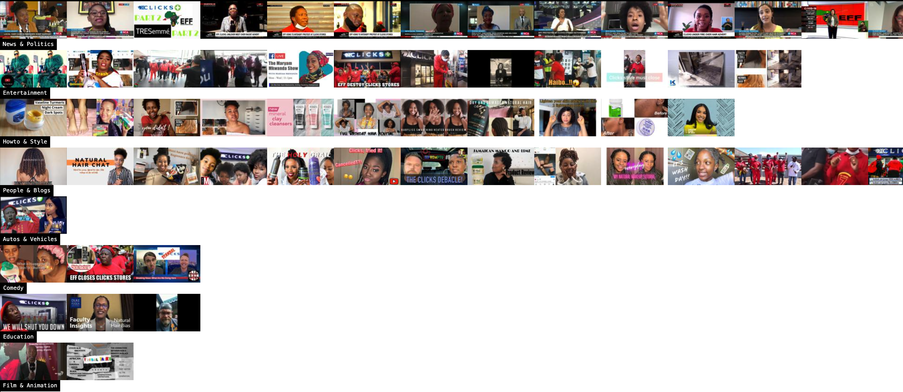
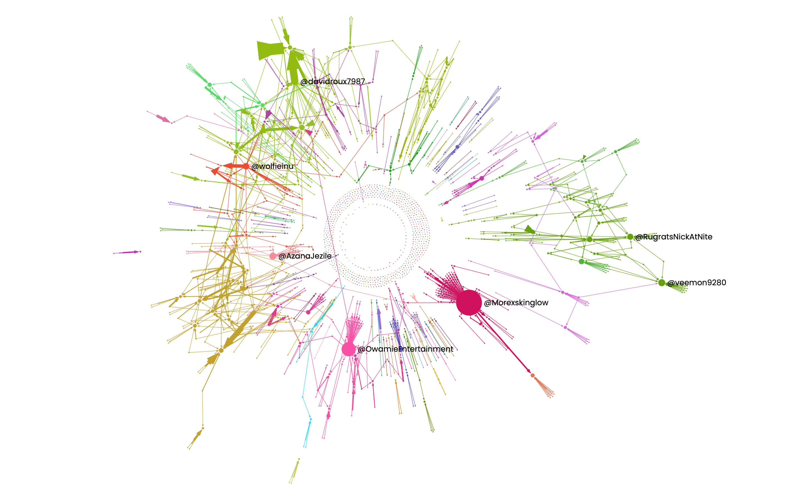
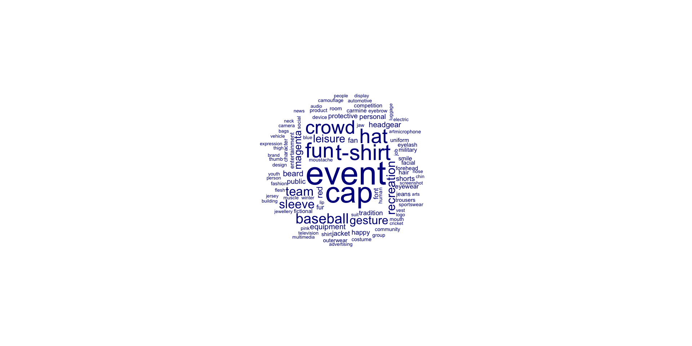
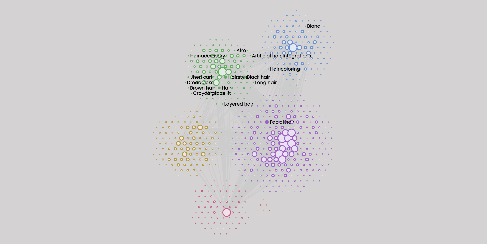
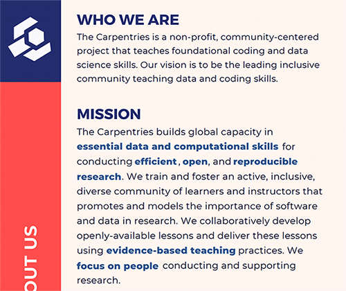
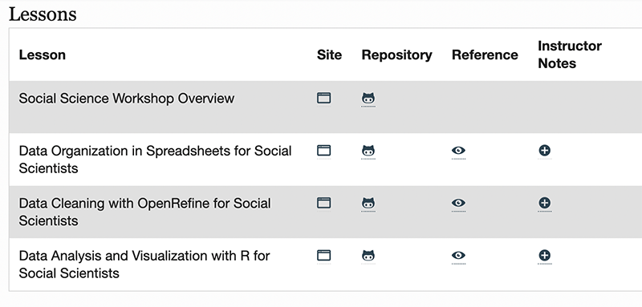

Visual methods and multimodal digital research
Building skills, infrastructure and supportive communities of practice in CFMS
Outline
- Multimodal discourse in social media data
- Challenges (case study class project FAM4038S)
- Global initiatives
- Local initiatives - SADILAR, Rhodes & UCT
Global initiatives
- Meta - Facebook Content Library & Facebook Ad Library
- UoA Digital Methods Initiative and 4CAT
- International Science Council CODATA School for Research Data Science
- Data Carpentry for Social Science curricula and communities of practice
Local initiatives
- SADILAR
- Digimethods at Rhodes University (SACOMM 2026)
- Data Carpentry for Media Studies pilot,
- Digital Methods for Social Media Research course (FAM4043S), 5. Summer term 2026, Western Cape?
The challenge
Class project - Digital Methods 2024
200 YouTube Videos, 6251 video scenes, 58 transcripts, 3417 comments, 88558 words
Hateful network structures ü§¨
Comment networks
Machine learning & visual meanings ✨
Google’s View ✨
Clicks video timelines: As labelled by Google Vision
Default values - Google Vision
Hair-related labels
Multimodal discourse & social media
- Scale of datasets
- Corporate gatekeepers, fragile infrastructure & changing goalposts
- Complexities of multimodal meanings and siloed tools for text vs images vs video
- Non-trivial “Foundational” skills: coding, maths, statistics
- Inapproriate curricula - counting cars, bacteria in a petri dish, types of bricks, Jane Austen
Neglected foundations
- (Multi-) Linguistic & multimodal analysis
- Social & ethical concerns - We can do this, but should we?
- Regulatory issues - Privacy & data protection
- Legal issues - Copyright & scraping
- Vital role of auditing and oversight
Infrastructure
Meta Data Tools
Facebook Ad Library - 7 year access to “political” ads, 3 month access to all others
One library, two interfaces
- Meta Content Library is database of publicly available content across Facebook and Instagram
- Gives researchers across the globe access to “the most comprehensive database of data to date”
- Must apply for access to data, can work with posts from public figures, widely shared content etc
- GUI - for qual researchers
- API - for programmatic access
Ad library + Screen scrapers
Purposive sample of ads (N=558), including 126 unique images and 85 unique video files posted to Meta platforms over a six month period by 99 different advertisers.
Multimodal content analysis of images of people in the sample (n=183)
Walton, M. & Aderibigbe, D. (2024, October). Hairy industries The politics of advertising hair products and services to South Africans on Facebook and Instagram. Paper presented at AoIR2024: The 25th Annual Conference of the Association of Internet Researchers. Sheffield, UK: AoIR. Retrieved from http://spir.aoir.org.
4CAT
GUI interface, locally hosted 4CAT.uct.ac.za (üôèACC,ICTS)
- Capture data & use machine learning services via API
- Use together with screenscraper e.g. Zeeschuimer for TikTok, Twitter/X
- Reproducible - records analytical settings
- Upload own video and audio data (e.g. Youtube)
- Accessible network analysis and machine learning
- 6 months (?) for data storage, then access removed.
Email marion.walton@uct.ac.za with research proposal and ethics clearance number
Conclusions
We need to expand the forms of disciplinary knowledge considered foundational in data science:
- Ongoing process of unraveling (multimodal) significances
- Cultivating community - “living and connected know-hows”
- Building and reflecting on relationship between knower and known
“treat data as a point of contact, a landing, an opportunity to get closer, to learn to care about a subject, or the people and places beyond data.” (Loukissas, 2019:196)
Thank you!
Social media corpus
200 posts were selected from results returned by the YouTube API in response to the following query: “Query: clicks south africa* hair (ad OR advertisement) -click” covering videos posted during the period 2020 - 2023
Posts were selected if they:
- Related directly to the controversy, or
- Related to issues about body politics and racism
A random sample (n=60) was selected for discourse analysis.
Adapted carpentries curriculum

YouTube videos over time
Commented Posts by Category
Most “liked” channels
Most commented channels
Data carpentry
.
What is Data carpentry (DC)?
Initially designed to teach software development skills to scientists, Carpentries materials were developed for both data and library science pathways and are now taught by thousands of instructors around the world. Data carpentry workshops for a biological/ecological curriculum were later adapted for a range of different scientific disciplines and datasets, including one designed for social scientists (Teal et al., 2015).
Data carpentry for social science curriculum
. What “foundations” are missing?
Are data ethics and data justice not as “foundational” as spreadsheets and dataframes?
Social media corpus
A dataset of 200 Youtube videos focused on the controversy about a Tresseme advert posted on the Clicks website in September 2020.
The text-based corpus includes: